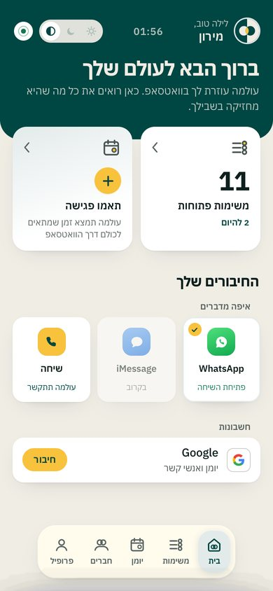
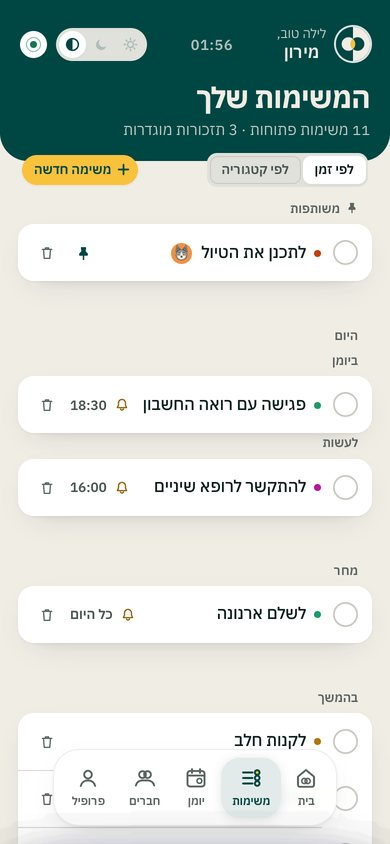
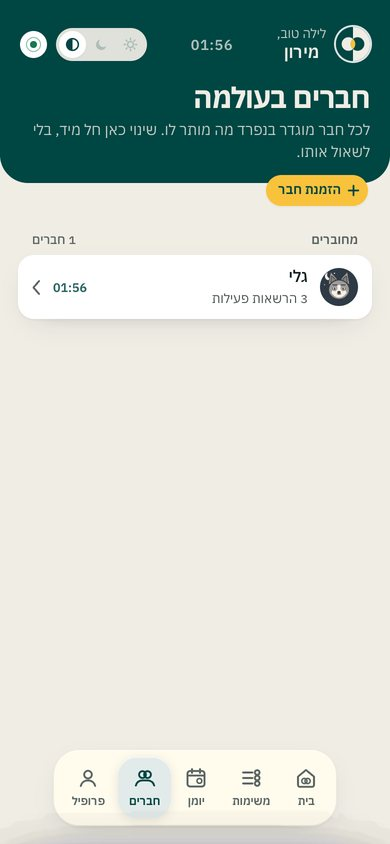

ברוש וחרדל. עוזרת שקטה ובטוחה בעצמה, שעושה בשבילך את הצעד הבא. הרקע נותן רוגע, הברוש נותן אמון, והחרדל מסמן את הרגע שבו משהו נסגר.
שלושה צבעים, ולכל אחד תפקיד אחד. בזה המותג יוצר תחושה: כשהחרדל מופיע תמיד באותו תפקיד, אנשים לומדים שהוא אומר "עולמה עשתה משהו בשבילך".
אותה מערכת בשתי תאורות. היום בהיר. בלילה הרקע כהה והחרדל נשאר, כדי שהפעולה תמשיך להיות מוכרת. לשבת אין כרגע צבעים משלה: היא נראית כמו כל יום אחר. העמוד הזה עצמו עובר ללילה כשהמכשיר שלך במצב כהה.
הבדיקה נעשתה לפי תקן WCAG AA: טקסט רגיל צריך 4.5 לפחות, וטקסט משני על כרטיס צריך 3. הערכים מחושבים, לא מוערכים בעין, והם נוצרים יחד עם הטוקנים.
| מצב | זוג | צבעים | יחס | סף |
|---|
שני עולמות, חצי חושך וחצי אור, וכל עיגול יושב בצד ההפוך לו. במקום שהם נפגשים יש עדשה בחרדל, והיא המקום שבו משהו נסגר. על רקע חול הסימן העגול מקבל טבעת דקה בברוש, כי אחרת החצי הבהיר שלו נעלם.
מתחת ל־20 פיקסלים העדשה נבלעת. בגודל הזה אפשר להשתמש רק בפאביקון, ואף פעם לא ליד טקסט.
פונט אחד לעברית ולאנגלית, מאותה משפחה ובאותו מבנה. המשקל המקסימלי בעברית הוא 700. מספרים תמיד ברוחב אחיד (tabular), כך שהשעות בכרטיס הבוקר מתיישרות.
יש שתי משפחות של איקונים. איקוני התפריט הם קו בלבד, בעובי 1.9, בלי שום רמז למותג. הלשונית הפעילה מסומנת ברקע שלה ולא בציור. הצבע נמצא בסימנים של התיאומים: חרדל במקום הזהב, ברוש במקום הסגול, והצל נוטה לברוש.
בכל זוג: מימין רגיל, משמאל פעיל. ניסינו גרסה עם עדשה בתוך כל איקון, והיא נפסלה: בגודל 24 היא עמוסה, והתפריט צריך להיות שקט.
ארבעה מספרים מה המצב: כתר כשכולם יכולים, קלפים כשהגענו למינימום של אנשים, חותם כשזה נסגר, ושעון חול כשהזמן אוזל. שנים־עשר אומרים מה עושים. בלילה מתחלפים רק הקו והנייר. המסומנים במסגרת, הכתר והקלפים, חיים היום בדאשבורד. השאר מוכנים, ב־brand/kit/coordination/.
אלה הארבעה: ראשי בחרדל, משני עם מסגרת ברוש, טאב עם רקע רך, ומחיקה בלבנה. לא מוסיפים מעבר להם.



אלה הדף האמיתי מהדמו המקומי, צבוע מבחוץ. זו עדיין לא הגרסה שבקוד.
הסימן העגול ממלא את כל העיגול, כך שוואטסאפ לא חותך ממנו כלום. הוא נשאר ברור גם בגודל של רשימת הצ׳אטים.
צבע שטוח על מסך נראה כמו תבנית. גרעין עדין נותן לחול תחושה של חומר מודפס, מחמם את Plex, שהוא פונט מדויק וקצת קר, ומונע פסים כשוואטסאפ ואינסטגרם דוחסים את התמונה. הכמות: כזו שמרגישים ולא רואים. אם שמים לב אליה במבט ראשון, יש יותר מדי.
בסרטון הגרעין קבוע ולא זז. גרעין שמרצד נראה כמו רעש, ומנפח את הקובץ.
מה שכתבנו על הקול בפלטפורמת המותג (26.9) עדיין נכון, והוא לא השתנה עם הצבעים. מתחתיו שישה כללים שנוספו ב־28.9, וכלל על הומור.
אופי. הבת־דודה שכל המשפחה סומכת עליה. זוכרת ימי הולדת, קובעת את הארוחה, לא עושה מזה עניין. חמה אבל עניינית, עם הומור יבש ומעט מילים.
מה היא לא. לא רובוט חכם, לא "AI" עם ניצוצות, לא מאמנת פרודוקטיביות, ולא מישהי שמזכירה לך שוב ושוב שלא עשית.
המילה. "סגור." עם נקודה, בסוף כל סרטון ובכל רגע של הצלחה. באנגלית: "All set."
הרעיון. עולמה סוגרת מעגלים. זה משפט עבודה ולא סלוגן: כל דבר שלא מראה מעגל שנסגר הוא לא עולמה.
| כלל | עולמה | לא עולמה |
|---|---|---|
| אומרים פעם אחת | "סגור ☕ חמישי 10:00 עם דנה." | "מעולה!! 🎉🎉 הפגישה שלך נקבעה בהצלחה!" |
| שאלה אחת בכל פעם | "חמישי 20:00 או שישי 13:00?" | "מתי נוח לך? ואיפה? וכמה אנשים?" |
| מסיימים, לא מתגאים | "שמרתי ביומן." | "בעזרת הבינה המלאכותית שלי סידרתי לך את היומן" |
| שקט הוא תשובה | 👍 | "קיבלתי! אם תצטרך עוד משהו אני כאן 😊" |
| הומור מהחדר | בדיחה קצרה, רק ממה שנאמר בקבוצה | בדיחות מוכנות, משחקי מילים על "AI" |
סלוגנים: "עולמה. הכל סגור." ו־"Allma. All set." שורת הסבר, לביו ולחנות: "כל העולם שלך. בצ'אט אחד."
היום רק "סגור" מוגדר. אבל רוב ההודעות שלה נשלחות לפני שמשהו נסגר, וכל אחת נשמעת אחרת. אני מציע לתת לכל מצב נוסח קבוע, בדיוק כמו הצורה: קשת פתוחה, עדשה שמתמלאת, סימן מלא.
לכל היותר אימוג'י אחד, בתחילת ההודעה, והוא אומר מה זה: ☕ 🎾 🍽️. אותו תפקיד שיש לסימנים של התיאומים בדאשבורד. אימוג'י של רגש לא נכנס לטקסט: 🙏 ו־👍 הם תגובות, לא מילים.
בכל טקסט קבוע, בפוסט ובסרטון: יום בשם ושעה בספרות. זה נקרא הכי מהר, ומתיישר בכרטיס הבוקר.
המוצר הוא מישהי בצ'אט. אם הפוסטים מדברים עליה בגוף שלישי, נוצרות שתי דמויות: היא, והמותג שמספר עליה. עדיף שהיא תדבר גם בפוסטים.
הרוגע של הברוש הוא גם פיסוק. הנקודה היא הסימן של המותג, "סגור." ולכן היא מסיימת משפטים. סימן קריאה נשאר רק בציטוט של מה שאנשים כתבו.
בצ'אט היא פונה לכל אחד בצורה שהוא בחר. בפוסט אין לה את זה, ולכן היא פונה ברבים או בלי פנייה בכלל. "תזכור" בפוסט מדבר רק לחצי מהקוראים.
הומור יבש, לא בדיחות. משפט אחד קצר, בסוף, אחרי החלק השימושי ואף פעם לא במקומו. בנוי רק ממה שקורה עכשיו, ואף פעם לא על חשבון מי שמדבר איתה. מותר לה לצחוק על עצמה. והכי חשוב: לעתים רחוקות. ההפתעה היא מה שמצחיק, ובדיחה בכל הודעה כבר לא מצחיקה.
ככה עשינו את סרטוני ההיכרות: כל סרטון הוא עמוד שמתנגן. ההצעה היא להפוך את זה לשיטה קבועה, כך שכל פוסט או סרטון יוצא תוך כמה דקות, תמיד לפי הספר הזה. וזה כבר לא רק תצוגה: אני מייצא קבצי וידאו אמיתיים, מוכנים להעלאה.
רעיון, טקסט גולמי, צילום מסך של שיחה אמיתית, או "עוד אחד כמו הקודם, על שבת".
פוסט 1080×1080, סטורי 1080×1920, קרוסלה, וסרטון לאורך או לרוחב. הצבעים, הפונט, הגרעין והסיום "סגור." בנויים בתוך התבנית, אז הם לא יכולים לזוז.
עמוד פרטי שמתנגן בדפדפן. אתה כותב מה לשנות, ואני משנה תוך דקות. אין ייצוא עד שאתה מרוצה.
PNG לפוסטים, MP4 לסרטונים (30 פריימים בשנייה). הייצוא הוא פריים אחרי פריים, אז אין קפיצות. הקובץ מגיע אליך ישר לצ'אט.
זה הסיום של כל סרטון, עם התנועה שבחרת: חצי שנייה של שקט, שני העיגולים נפגשים, העדשה נדלקת, ואז "סגור.". הקובץ יצא מהמחשב הזה: 1080×1080, 3 שניות, 91 פריימים, עם גרעין.
מה צריך לבנות: את התבניות עצמן, ב־brand/studio/. המנוע כבר קיים: render.js שמייצא ו־motion.js שמזיז.
מה זה לא עושה טוב: עריכה של צילומי וידאו אמיתיים וקריינות. לשם כך אייצא את החלקים שלנו (פתיח, סיום, כתוביות) כקליפים נפרדים, שנכנסים לכל עורך. מוזיקה: אם תשלח קובץ, היא תיכנס. בלי קובץ יש שקט, וזה גם מה שהספר אומר, בלי ג'ינגל.
כולן על אותה עקומה: יציאה רכה ונחיתה ארוכה, בלי קפיצה, בלי סיבוב ובלי רעידה. מי שהגדיר במכשיר "פחות תנועה" יראה את הסימן כבר במקום. בחרת במפגש, בשינוי אחד: שני החצאים נשארים במקום, ורק שני העיגולים נכנסים מהקצוות. העדשה נוצרת ברגע שהם נוגעים. שלוש האחרות נשארות כאן בשביל ההיסטוריה.
שאלה אחת שנשארה: המפגש לוקח 1.1 שניות. זה מושלם בסרטון ובמסך פתיחה. אבל בדאשבורד, ברגע שתיאום נסגר, זה קורה הרבה פעמים ביום, ושם אני מציע את נדלק (0.45 שניות): אותו רגע, רק שקט יותר.
כל צעד הוא PR נפרד. מיזוג ל־main הוא דיפלוי, ולכן לפני כל מיזוג אראה לך צילומים של לפני ואחרי.
טוקנים (CSS, JSON, ASE לכלי עיצוב), סימנים ב־SVG, תמונת פרופיל 640, פאביקונים, לוגו מלא בעברית ובאנגלית, והאיקונים. הכל ב־brand/kit/, ונוצר מסקריפט אחד.
הקובץ הוא whatsapp-avatar-640.png. מחליפים אותו מהטלפון של המספר של עולמה, בהגדרות של וואטסאפ. זה הצעד הכי מהיר, וכל משתמש יראה אותו.
/me חונההצבעים, הפונט והסימן בכותרת כבר מוכנים, וכל הבדיקות עוברות. זה מחכה, כי סשן אחר עובד עכשיו על הדאשבורד. איקוני התפריט לא משתנים.
הכרטיס הוא תמונה שנשלחת בוואטסאפ (schedule-card.js). היום הוא בכתום־ענבר עם הפונט Heebo. כדי לצייר אותו ב־Plex צריך להוסיף את קובצי הפונט לריפו. הרישיון הוא OFL, והוא מתיר את זה.
דף הבית הציבורי ודף הפרטיות: הלוגו המלא, הצבעים, ופאביקון במקום הריק שיש היום.
עורכים דרכי. אחרי שתאשר, אבנה ארבע תבניות, ואז נעשה מחדש את סרטוני ההיכרות במותג החדש.
זה הדבר היחיד מהמותג שכל משתמש רואה כל בוקר, והוא עדיין בצבעים ובפונט הישנים. האתר נפתח פעם אחת. אני מציע להקדים את הכרטיס.
כשעולמה שולחת קישור לדף האישי, וואטסאפ מציג לו כותרת ותמונה. זה המקום השני שבו כולם רואים את המותג. אני מציע תמונה ממותגת וכותרת קבועה. קודם אבדוק מה מופיע שם היום.
הטקסטים הקבועים שהיא שולחת, כמו הזמנות והשורות בקבוצה, ייבדקו אוטומטית מול הכללים החדשים: בלי סימן קריאה, אימוג'י אחד לכל היותר ובתחילת ההודעה, ושעה באותה צורה. כמו הבדיקות של העברית שכבר רצות, בקוד ולא במודל.
בדאשבורד, ברגע שתיאום נסגר, העדשה של הסימן נדלקת בחרדל. ככה המשמעות של החרדל, "זה נסגר", חוזרת במוצר עצמו ולא רק בפוסטרים.
היום כתוב "אין משימות". בקול שלה: "אין כלום פתוח. רגע נדיר." המקום הכי טבעי להומור הזה, כי שם אף אחד לא לחוץ.
brand/kit/tokens/allma.css · הטוקנים ליום וללילהbrand/kit/tokens/allma.json · אותו דבר, ועוד בדיקת הניגודיותbrand/kit/tokens/allma.ase · פלטה לכלי עיצובbrand/kit/mark/*.svg · שש גרסאות של הסימןbrand/kit/icons/*.svg · חמשת איקוני התפריט, המקורייםbrand/kit/coordination/ · 16 סימני התיאום, ליום וללילהbrand/studio/ · התנועה והייצוא לווידאוbrand/kit/png/whatsapp-avatar-640.pngbrand/kit/png/lockup-{he,en}-for-{light,dark}.pngbrand/kit/png/favicon-32 · apple-touch-180 · icon-512brand/tools/build_cypress.py · בונה את כל הרשימה הזו מחדש